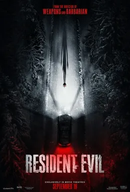

The genetics
The outbreak is the product of a biotechnology programme. The Umbrella Corporation developed, for the US government, a substance able to make organisms evolve rapidly (French Wikipedia says it was meant to give them 'the best version of themselves'), and a laboratory accident released it into Raccoon City. Its effects are monstrous: people and animals mutate, merge into an ever-growing amalgam of bodies and spread the infection by biting. Umbrella's own staff appear as victims trying to repair the damage, delivering a stabiliser so that the hospital scientists can produce a cure, but the attempt fails when the infected protagonist kills them. The film is a horror adaptation of the video-game series, in which corporate genetic ambition is the root of the nightmare; a substance that speeds up evolution in a living body is pure fiction, since evolution acts on populations over generations.
How genetics is portrayed
- Overall portrayal of genetics
- negative Corporate-government biotechnology causes an apocalyptic outbreak and the attempt to undo it fails; the ending is bleak.
- Outcome of the genetic intervention
- negative The substance turns a whole city into mutants and fused monsters, the cure is lost, and the protagonist himself becomes a monster.
- Umbrella Corporation
- villain Aim: commercial, military (negative). Umbrella developed the evolution-accelerating substance under contract to the US government, and a laboratory accident unleashed it on Raccoon City; the film presents the company as the source of the catastrophe.
- Umbrella's hospital laboratory scientists
- neutral Aim: benevolent (positive). They wait for the stabiliser to produce a cure for the National Guard; they appear briefly as victims and are killed by the mutating courier before they can finish.
The story
Bryan, a medical courier anxious about his girlfriend's pregnancy, takes a last-minute job delivering a package to Raccoon City General Hospital in the Colorado mountains. On the way he hits a woman who later attacks him, and at a farm he faces a mutated dog and her infected husband, whose bodies fuse into a single creature that keeps absorbing more victims. Bitten by an infected girl, he is rescued by two Umbrella Corporation employees, Paul and Maxine, who explain that Umbrella developed a substance for the US government that makes organisms evolve rapidly, and that a laboratory accident caused the outbreak. His package is a stabiliser that the hospital's scientists need to make a cure. Maxine and Paul die, and Bryan fights his way through sewers, an elevator shaft and a maternity ward full of mutants to deliver it. As the scientists start on the cure, his infection takes over: he kills them, the cure falls from the roof, and the fully mutated Bryan roars as National Guard helicopters arrive.